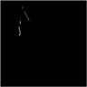
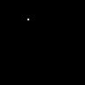

Environments¶
There are 4 environments available. You should use KuruveGymEnv as a base for other environments. Remember to check the action and observations spaces for each environment.
GymEnv/KuruveGymEnv¶
Example image (96x96) of the observation:

-
class
kuruve.envs.GymEnv.KuruveGymEnv(headless=False, observation_size=(64, 64), fps_cap=0, frameskip=1, enable_powerups=False, verbose=0)¶ Gym compatible learning environment for 2 players (for now). Use this as a base for environments.
- Parameters
headless – Show window
observation_size – The game screen will be scales to this size
fps_cap – Limit framerate. 0 is unlimited. 60 is for human play.
frameskip – Skip frames. Previous action will be repeated for the skip duration. Use 1 for no skip (Default).
enable_powerups – Enable powerup spawning.
verbose – Print additional information.
-
close()¶
-
render(mode='human')¶
-
reset()¶
-
seed(seed=None)¶
-
step(action)¶
SurvivalEnv¶
-
class
kuruve.envs.SurvivalEnv.SurvivalEnv(headless=False, observation_size=(64, 64), fps_cap=0, frameskip=1, enable_powerups=False, verbose=0)¶ Gym compatible learning environment. Try survive as long as possible.
- Parameters
headless – Show window
observation_size – The game screen will be scales to this size
fps_cap – Limit framerate. 0 is unlimited. 60 is for human play.
frameskip – Skip frames. Previous action will be repeated for the skip duration. Use 1 for no skip.
enable_powerups – Enable powerup spawning.
verbose – Print additional information.
CompetitiveEnv¶
Example images (96x96) of the observation:
Left image: grayscale image of the screen. Right image: player’s (1) position.
 -
class
kuruve.envs.CompetitiveEnv.CompetitiveEnv(headless=False, observation_size=(64, 64), fps_cap=0, frameskip=0, enable_powerups=False, verbose=0, player2_step=None, player2_reset=None)¶ Environment for self-play experiments. Two worms (currently).